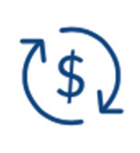

Estruturação Sala de Urgencia Projeto de obrigação de fazer da Vale
Objetivo:
Estruturar Salas de Urgência ao comprar e
instalar equipamentos, materiais e mobiliários
em um local indicado pelo município.
Onde:
Municípios da Bacia do Paraopeba
que estão incluídos no projeto:
Abaeté, Betim, Biquinhas, Curvelo, Esmeraldas,
Felixlândia, Igarapé, Juatuba, Mateus Leme,
Morada Nova de Minas, Papagaios, Pará de
Minas, Paraopeba, Pompeu, São Gonçalo
do Abaeté, São Joaquim de Bicas e Três Marias.
Investimento:
Previsto: R$ 14.029.498,88.
Duração:
Estruturar Salas de Urgência ao comprar e
instalar equipamentos, materiais e mobiliários
em um local indicado pelo município.
Resumo do Desenho do Projeto
Estruturação Sala de Urgência
RECURSOS
Equipes capacitadas nas
prefeituras, Secretaria
Estadual de Saúde e Vale
Estabelecimento de Saúde
indicado pelo município
para a Sala de Urgência
Relação de Equipamentos
Programa Arquitetônico
Mínimo para Unidade de
Pronto Atendimento
Acordo de reparação
ATIVIDADES
Adquirir materiais,
equipamentos e mobiliários
com garantia de 1 ano
Entregar e instalar
materiais, equipamentos
e mobiliários para
município piloto
Apoiar a Secretaria
Estadual de Saúde a
fazer vistoria técnica,
no município piloto
Entregar, instalar e vistoriar
materiais, equipamentos
e mobiliários para
demais municípios pela
equipe técnica da Vale
PRODUTOS
Produtos adquiridos
e entregues em
conformidade com as
especificações técnicas
em município piloto
Materiais, equipamentos
e mobiliário instalados
em todos os municípios
aderentes
RESULTADOS INTERMEDIÁRIOS
Municípios contam
com Sala de Urgência
em funcionamento
RESULTADOS
A LONGO PRAZO
Acesso e qualificação
da prestação dos
serviços de urgência e
emergência municipais
Resolutividade do
atendimento aos pacientes
Linha do Tempo Prevista
Estruturação Sala de Urgência
Fase 2 – Planejamento
Reuniões de partida do projeto;
Cotação e aquisição dos equipamentos,
materiais e mobiliários;
Entrega do relatório de cotação
dos equipamentos;
Entrega do relatório de aquisição
dos equipamentos
Fase 4 –
Encerramento
Quitação da
obrigação de
fazer da Vale
Jan/2022
X Onde estamos!
Fev/2023
Fase 1 –
Identificação/
Definição
Assinatura dos Termos
de Compromisso
Fase 3 – Execução
Entrega e instalação dos equipamentos,
materiais e mobiliários;
Assinatura do termo de recebimento;
Relatório final de entrega
Avanço Físico
Estruturação Sala de Urgência
Gráfico 1 – Percentual de Execução das Atividades do Projeto
Abaeté
13%
Betim
69%
Biquinhas
Curvelo
13%
Esmeraldas
13%
Felixlândia
13%
Igarapé
13%
Juatuba
13%
Mateus Leme
13%
Morada Nova de Minas
Papagaios
Pará de Minas
13%
Paraopeba
13%
Pompéu
13%
São Gonçalo do Abaeté
São Joaquim de Bicas
13%
Três Marias
13%
0%
10%
20%
30%
40%
50%
60%
70%
80%
90%
Adiantado
No prazo
Em atraso
3
Produtos previstos
3
Produtos entregues
0
Produto em atraso
Fonte: Cronograma enviado pela Vale em 31/05/2022.
| - A marcação no gráfico indica o percentual planejado de execução das atividades do cronorama até a
data de referência.
Os municípios sem valores no Gráfico 1 apresentaram inconsistências no avanço físico apresentado.
Foi considerado um limite de 3% inferior e superior frente ao previsto para sinalizar se o projeto está no
prazo
Atividades realizadas
Até o dia 26 de maio de 2022, a Vale já tinha entregado
30 equipamentos na cidade de Betim, faltando ainda 7,
que deverão ser entregues até o final de junho.
Equipamentos entregues
Municípios
Qtde
Local
Total
30
-
Abaeté
-
UPA 24h de Abaeté
Betim
30
UPA José Sabino Neto Teresópolis
Biquinhas
-
-
Curvelo
-
Pronto Atendimento Municipal
Dr. Márcio Carvalho Lopes
Esmeraldas
-
Hospital 25 de Maio
Felixlândia
-
Hospital Municipal de Felixlândia
Igarapé
-
UPA Prefeito Osvaldo
Cândido de Queiroz
Juatuba
-
Juatuba Pronto Atendimento
Mateus Leme
-
UPA 24h Tiago Cardoso Santos
Morada Nova
de Minas
-
-
Papagaios
-
-
Pará de Minas
-
UPA José Porfirio de Oliveira
Paraopeba
-
UPA São Vicente de Paula
Pompéu
-
Santa Casa de Misericórdia
de Pompéu
São Gonçalo
do Abaeté
-
-
São Joaquim
de Bicas
-
UPA Miguel Henrique Maia
Três Marias
-
Hospital São Francisco
Próximas atividades
A vistoria da Secretaria Estadual de Saúde em Betim
está prevista para o mês de junho.
Avanço Financeiro
Estruturação Sala de Urgência
Gráfico 2 – Percentual de Realizado do Projeto
4%
14.709.943
0.0M1.5M2.9M4.4M5.9M7.4M8.8M10.3M11.8M13.2M14.7M
% Realizado
Valor total aprovado corrigido

O valor total previsto para o projeto é de R$ 14.029.498,88, sendo
que o valor total corrigido até maio de 2022 é de R$ 14.709.943.
O Gráfico 2 – Percentual Realizado do Projeto representa o
avanço financeiro da iniciativa até o momento em relação ao valor
total aprovado corrigido. O percentual de execução financeira
da iniciativa Estruturação de Sala de Urgência é de 4%, o
equivalente a uma realização de R$ 589.937,35.
O Gráfico 3 – Percentual Realizado por Município representa
o percentual realizado por município aderente em relação ao
valor total aprovado e corrigido pelo IPCA, conforme determina
o Acordo Geral.